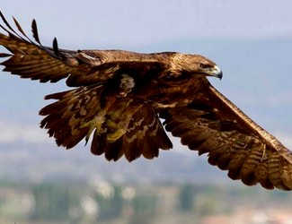
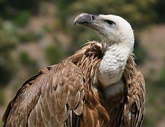
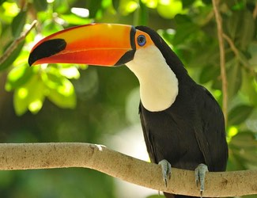
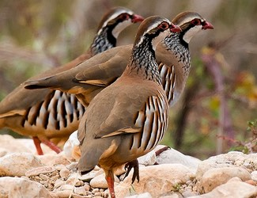
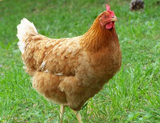
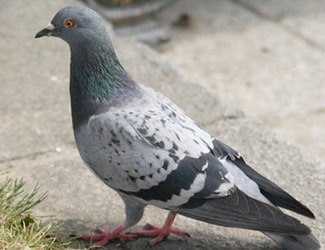
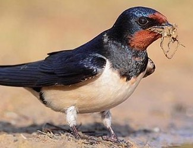
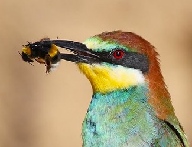
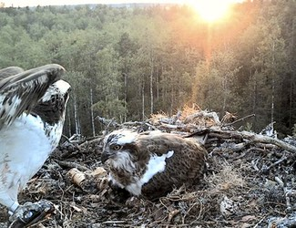
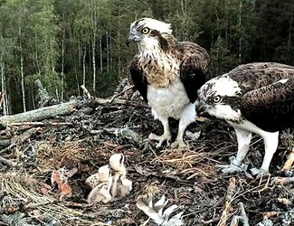

Las aves son animales vertebrados, que caminan, saltan o se mantienen solo sobre las extremidades
posteriores. Las extremidades anteriores están modificadas como alas, lo que les permite volar en la
mayoría
de casos. Aunque no todas vuelan.
Caracteristicas
Su cuerpo esta cubierto de plumas.
Sus extremidades anteriores tienen forma de alas..
El esqueleto es muy ligero, ya que los huesos son huecos..
La temperatura corporal es constante, son animales de sangre caliente..
Respiran por pulmones..
La boca posee un pico sin dientes, que varia según su alimentación.
¿Que comen?
Segun su alimentación, las aves pueden ser:
Carnivoros.
Se alimentan de carne. Son carnívoras el águila y el buitre


Herviboros.
Se alimentan principalmente de frutos y de semillas. Dentro de este grupo podemos dístinguir dos
tipos: Si se alimentan solo de frutas (como el tucán) se les llama Frugívoras ,
y si solo se
alimentan de semillas (como la perdíz) son denominadas Granívoras .


Omnivoros.
Se alimentan de animales y plantas. Son omnívoras la gallina y la paloma.


Insectívoras.
Se alimentan de insectos. Son insectívoras la golondrina y el abejaruco.s


¿Como se reproducen?
Las aves son ovíparas porque se reproducen por huevos. El proceso de reproducción es el siguiente:
Las aves son ovíparas porque se reproducen por huevos. El proceso de reproducción es el
siguiente:
Las aves son ovíparas porque se reproducen por huevos. El proceso de reproducción es el
siguiente:
Los huevos fecundados deben mantenerse a una temperatura próxima a la temperatura corporal del
adulto. Este proceso se llama incubación.
Pasado el tiempo, las crías rompen la cáscara y salen al exterior.


A T-Rex on display in the Manchester University Museum.

.jpg)